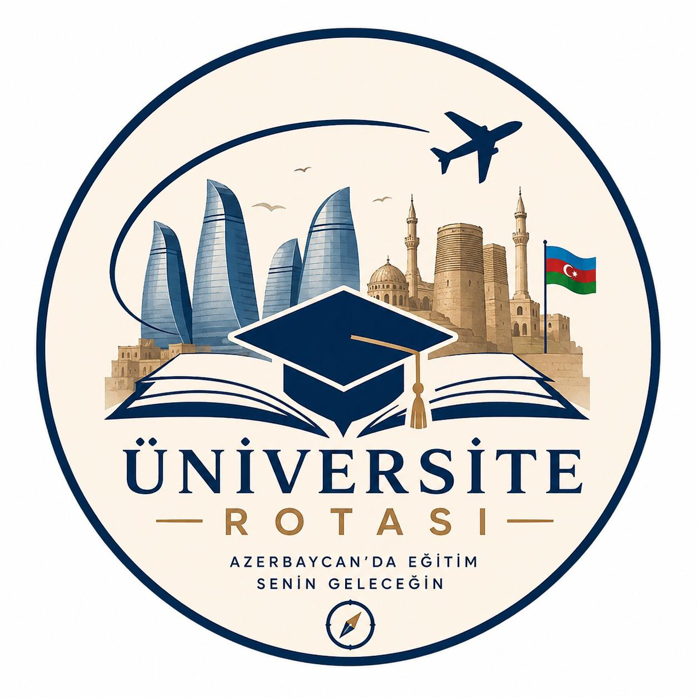

Azerbaycan Üniversite Danışmanlığı
Üniversite Rotası olarak öğrencilerin Azerbaycan’da doğru üniversite ve bölüm tercihi yapmasına destek oluyoruz.
Bizimle İletişime GeçÖğrencilerin Nahçıvan ve Bakü’deki eğitim seçenekleri hakkında doğru bilgiye ulaşmasını sağlamak.
Üniversite seçimi, bölüm seçimi, kayıt, yurt, geliş ve oturum süreçlerinde öğrenciye adım adım destek olmak.
Abartılı vaatler yerine açık, sade ve anlaşılır bilgi sunmayı önemsiyoruz.
Üniversite, bölüm ve süreçler hakkında öğrenciyi gerçekçi şekilde bilgilendiriyoruz.
Süreç boyunca WhatsApp üzerinden hızlı ve anlaşılır destek sağlıyoruz.
Her öğrencinin hedefi ve durumu farklıdır. Bu yüzden yönlendirmeyi kişiye göre yapıyoruz.
Üniversite Rotası, başvuru sürecinde güvenilir ve ulaşılabilir bir danışmanlık desteği sunmayı hedefler.
WhatsApp’tan Yaz